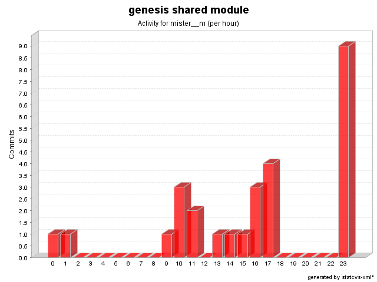

| Login: mister__m Fullname: mister__m Revisions: 27 Lines of Code: 192 Added Lines of Code: 243 Lines of Code per Change: 7.1 |

| Date | Author | File/Message |
|---|---|---|
| 6/10/08 11:35 AM | mister__m | IllegalArgumentException is thrown if HibernateCriteria hasn't been prepared for execution (issue # 496)
(1 Files changed,
11 Lines changed) src/net/java/dev/genesis/command/hibernate/CriteriaCommandExecutor.java 1.9
(+11
-3)
|
| 11/1/07 10:57 AM | mister__m | ClassesCache now uses WeakReferences (issue # 472)
(1 Files changed,
19 Lines changed) src/net/java/dev/genesis/reflection/ClassesCache.java 1.2
(+19
-14)
|
| 11/1/07 9:40 AM | mister__m | New constructor added (issue # 471)
(1 Files changed,
7 Lines changed) src/net/java/dev/genesis/exception/BusinessException.java 1.2
(+7
-1)
|
| 1/15/07 10:50 AM | mister__m | New unit test for EnumConverter
(1 Files changed,
5 Lines changed) src/net/java/dev/genesis/helpers/EnumHelper.java 1.3
(+5
-5)
|
| 5/13/05 11:43 PM | mister__m | Merged with 2.2-RC1 (issue # 221)
(1 Files changed,
68 Lines changed) src/net/java/dev/genesis/paging/ListPager.java 1.2 added 68 |
| 1/10/05 3:15 PM | mister__m | Minor fix.
(1 Files changed,
4 Lines changed) src/net/java/dev/genesis/command/hibernate/AbstractHibernateCommand.java 1.4
(+4
-1)
|
| 1/4/05 11:03 AM | mister__m | Minor bug.
(1 Files changed,
3 Lines changed) src/net/java/dev/genesis/command/hibernate/AbstractHibernateCommand.java 1.3
(+3
-1)
|
| 12/21/04 10:52 AM | mister__m | Minor improvement.
(1 Files changed,
2 Lines changed) src/net/java/dev/genesis/command/hibernate/CriteriaCommandExecutor.java 1.5
(+2
-0)
|
| 12/21/04 1:59 AM | mister__m | Fix for issue # 83.
(1 Files changed,
1 Lines changed) src/net/java/dev/genesis/command/hibernate/CriteriaResolver.java 1.2
(+1
-1)
|
| 11/27/04 5:55 PM | mister__m | Fix for issue # 82
(1 Files changed,
11 Lines changed) src/net/java/dev/genesis/command/hibernate/CriteriaCommandExecutor.java 1.4
(+11
-4)
|